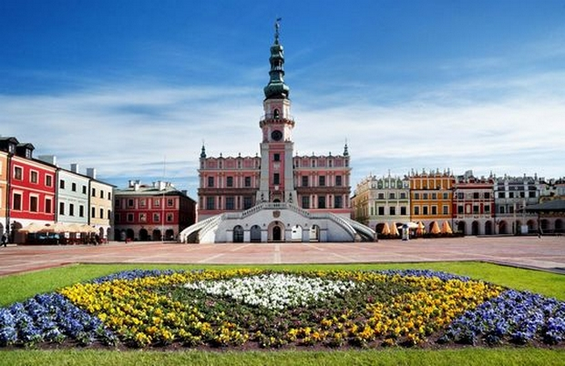

STARE MIASTO W ZAMOŚCIU

Miasto zostało założone w XVI wieku przez kanclerza Jana Zamoyskiego, na szlaku handlowym łączącym Europę Zachodnią i Północną z Morzem Czarnym. Zamość, wzorowany na włoskim modelu miasta idealnego, zbudowany przez pochodzącego z Padwy architekta Bernardo Morandiego, stanowi doskonały przykład miasta renesansowego z końca XVI w., które zachowało pierwotny plan, fortyfikacje oraz liczne budowle, łączące włoskie i środkowoeuropejskie tradycje architektoniczne.